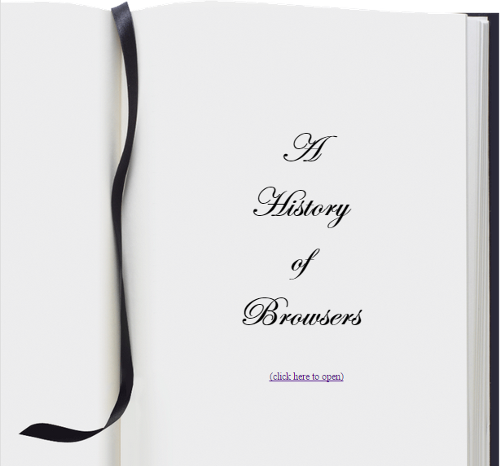
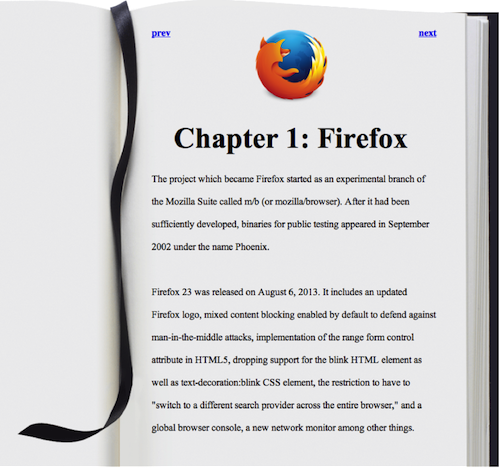

For this WOD, you will split the one page, three column “History of Browsers” web page into five separate web pages:
- An index.html front page with an introduction title using Edwardian Script ITC font (this is NOT a Google font). This page
should allow the user to click on the page to move to the table of contents page (page 2)
 - A table of contents page with links to three chapter pages containing the history of the three browsers.

- Three pages containing the history of the three browsers. An example page (firefox.html) will look like this:

Here are the specifications:
- Create a VS Code project called “BrowserHistory5”
- Copy index.html and style.css from BrowserHistory3 into this project.
- Create new files contents.html, intro.html, ie.html, firefox.html, chrome.html and copy index.html into it. A good way to do this is by selecting index.html and copy to pasteboard (Ctrl+C or Cmd+C or use the menu) then select the site root and paste (Ctrl+V or Ctrl+V) and repeat this 5 times. Then select and rename these files.
- In index.html delete everything in the <body> except the <h1> tag. Give this tag the class “fancy” and place
’s in between the words. Add a link to contents.html with the text “(click here to open)”. In the <body> tag set the attribute style=”margin-top: 200px” - In contents.html remove everything but the navbar <div> and <h1>. Change the <h1> to say “Contents” and add the attributes style=”margin-top: 100px”;” class=”fancy” to this <h1>. Now modify the <li>’s to href the browser history files (e.g. ie.html) and add the Charper labels. Add the attribute style=”margin-left: 25%; margin-right: 25%;” to the intro <li>
- Start with ie.html and delete everything but the <div> for the ie history. Add the following at the top of the <div>
<a class="left" href="contents.html">prev</a> <a class="right" href="firefox.html">next</a> <p> <img src="http://upload.wikimedia.org/wikipedia/en/1/10/Internet_Explorer_7_Logo.png" width="100px" height="100px"> </p> - Change the <h2> to
<h2 class="chapter">Chapter 1: Internet Explorer</h2> - Title the page “A history of internet explorer”
-
Repeat the above for the other history pages. Take care to set the prev and next links to the appropriate pages.
- In style.css add
background-image: url('https://dport96.github.io/ITM352/morea/030.ui-basics/page.gif'); background-repeat: no-repeat;to the body style. Change the color to black and set the margin to
40px 320px 200px 250px;. The width should be 475px; addline-height: 175%; - Change the img style to
float: center; margin: 0px 0px 10px 150px; - Change the li style from inline to block
- Change the ul style to
list-style-type: none; padding: 0; line-height: 350%; font-size: 30px; font-weight: bold; - Add the following class styles
h1.fancy {
font-family: Edwardian Script ITC;
font-size: 50pt;
text-align: center;
line-height: 135%;
}
h2.chapter {
font-size: 30pt;
text-align: center;
}
a.left {
float: left;
font-weight: bold;
}
a.right {
float: right;
font-weight: bold;
}
Rx: <15 min Av: 20 min Sd: 30 min DNF: 30+ min